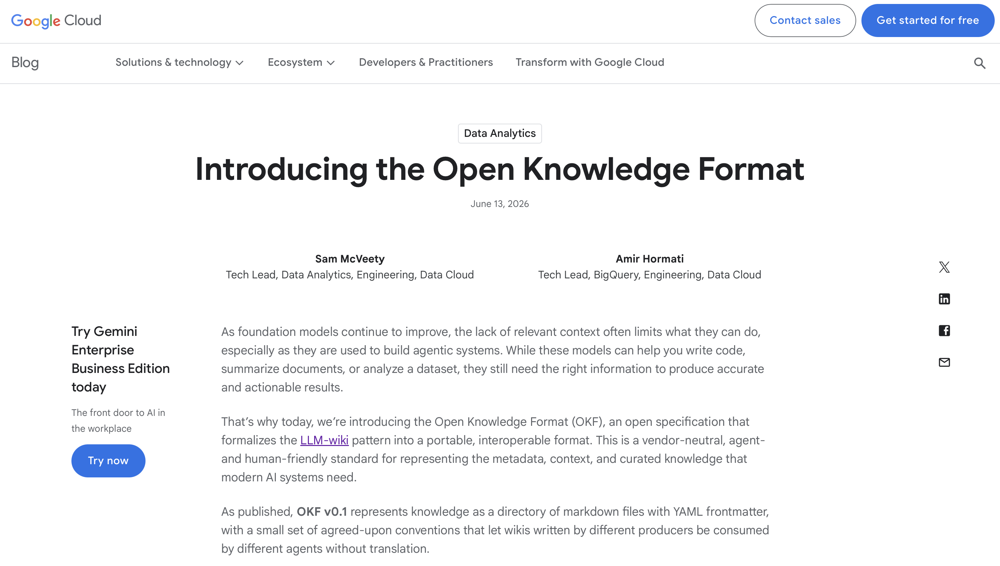
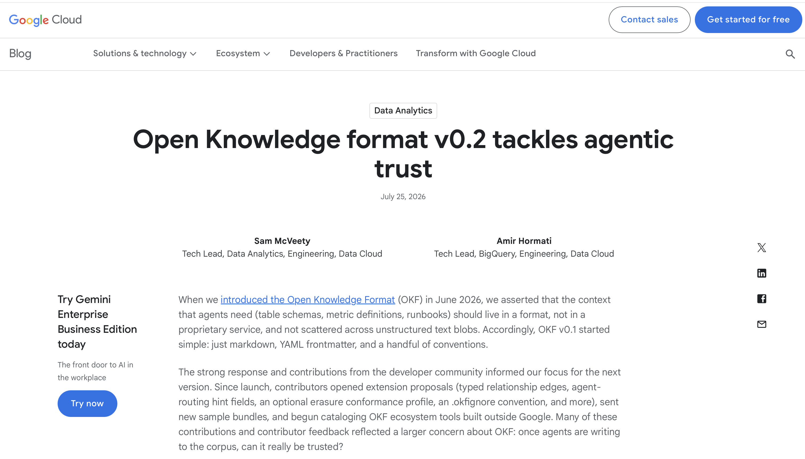
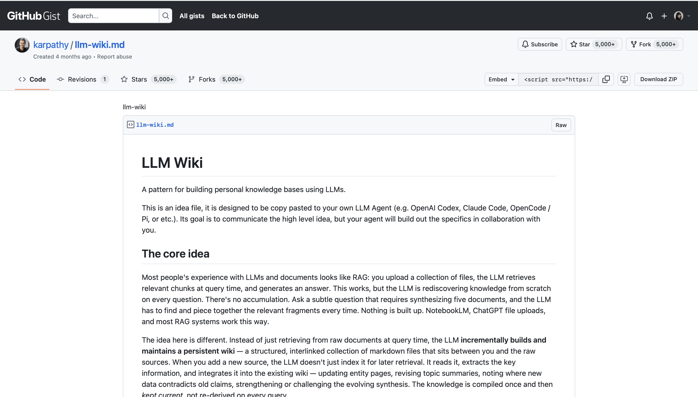

더 알아보기
본 강의 이외에 더 공부하고 싶을 때
강의에서 깊이 다루지 못한 내용을 추가로 공부하실 수 있도록 정리해 두었습니다.
| 번호 | 항목 | 어디와 이어지나 |
|---|---|---|
| 1 | RAG 내부 동작 | 모듈 ① · RAG란 무엇인가 |
| 2 | OKF 규격 상세 | 모듈 ① · OKF |
| 3 | OKF v0.1 → v0.2 | 모듈 ① · OKF |
| 4 | 프론트매터(type)의 종류 | 모듈 ① · OKF |
| 5 | 지식 그래프란 무엇인가 | 모듈 ④ · 그래프 읽는 법 |
| 6 | Karpathy 원문과 OpenWiki | 마무리 |
저장은 한 번, 검색은 질문마다
내부에서는 무슨 일이 일어나나
| 단계 | 하는 일 |
|---|---|
| 청킹 | 긴 문서를 문단 정도 크기로 잘게 나눕니다. 문서 전체는 한 번에 넣기엔 너무 길기 때문입니다. |
| 임베딩 | 글을 숫자 목록으로 바꿉니다. 뜻이 비슷한 글은 비슷한 숫자가 되어서, 컴퓨터가 의미를 비교할 수 있게 됩니다. |
| 벡터 DB | 바뀐 숫자들을 모아 두고 "이것과 비슷한 것"을 빠르게 찾아 주는 저장소입니다. |
| 유사도 top-k | 질문과 가까운 조각을 k개만 고릅니다. 보통 3~10개 정도입니다. |
| 컨텍스트 주입 | 고른 조각을 질문 앞에 붙여 AI에게 함께 건넵니다. AI는 이 붙은 내용만 보고 답합니다. |
프론트매터에 쓰는 항목들
OKF에서는 다음과 같은 항목들을 이야기합니다.
| 항목 | 무엇을 적나 | 필수 |
|---|---|---|
| type | 이 문서가 어떤 종류인지 (개념, 규격, 도구 …) | 필수 |
| title | 문서 제목 | 선택 |
| description | 한 줄 요약 | 선택 |
| resource | 이 문서가 가리키는 실제 대상 (표, 지표, API 등) | 선택 |
| tags | 분류용 꼬리표 | 선택 |
항목을 늘려도 되는 이유
필수는 type 하나
나머지는 만드는 쪽 마음입니다. 규칙이 많으면 아무도 지키지 않는다는 판단입니다.
모르는 항목이 있어도 거부하지 않는다
규격이 명시한 조건입니다. 그래야 서로 다른 곳에서 만든 위키가 통합니다.
특정 도구에 묶이지 않는다
읽고 쓰는 데 전용 계정이나 프로그램을 요구하지 않겠다고 명시했습니다.
두 번째 원칙 덕분에 내 분야에 필요한 항목을 그냥 추가해도 됩니다. 논문이면 authors, venue, year 같은 항목을 얹는 식입니다. 그 항목을 모르는 도구도 문서를 그대로 읽습니다.
"이 문서를 믿어도 되는가"
AI가 문서를 대량으로 만들어 내면서 생긴 질문입니다. OKF v0.2에서는 그 판단 근거를 프론트매터에서 바로 읽을 수 있게 항목을 몇 개 늘렸습니다.
| 추가된 항목 | 답하는 질문 |
|---|---|
| sources | 어떤 자료에서 나왔나 |
| generated | 누가(또는 무엇이) 만들었나 |
| verified | 그 뒤에 누가 확인했나 |
| stale_after | 언제부터 낡은 것으로 볼까 |
| status | 초안인가, 현행인가, 폐기됐나 |
늘어난 것은 규칙이 아니라 어휘


type 에 무엇을 적나
| 프론트매터 | 어떤 문서에 붙나 |
|---|---|
| core-concept | 개념 하나를 설명하는 문서. 오늘 실습에서 가장 많이 생깁니다. |
| standard | 규격이나 표준을 다루는 문서 |
| tool | 도구나 프로그램을 다루는 문서 |
| query-result | 질문에 대한 답을 저장한 문서 |
프론트매터를 붙이는 값
나중에 골라낼 수 있습니다. "type이 개념인 문서 전부"처럼 조건으로 뽑을 수 있게 됩니다.
내 분야에 맞게 늘리기
논문용 paper, 회의록용 meeting 처럼 필요한 종류를 더해도 규격 위반이 아닙니다.
지식 그래프란 무엇인가
개념을 점으로, 개념 사이의 관계를 선으로 나타낸 것입니다. 검색이나 추천 서비스에서 오래 쓰여 온 방식이고, 오늘 만드는 위키도 같은 모양입니다.
개념 하나 = 문서 하나
파일 경로가 그 개념의 이름이 됩니다.
문서 사이의 링크
본문에 걸어 둔 링크가 그대로 선이 됩니다. 따로 그리는 것이 아닙니다.
중심과 변두리
여러 문서가 가리키는 개념은 크게, 아무도 가리키지 않는 문서는 혼자 떨어져 보입니다.
Karpathy의 메모

원문이 든 비유는 이렇습니다 — "Obsidian is the IDE; the LLM is the programmer; the wiki is the codebase."
OpenWiki — 같은 구조를 코드 저장소에
LangChain이 공개한 도구입니다. 저장소를 읽어 마크다운 위키를 만들고, 변경이 생길 때마다 갱신합니다.
코드 저장소를 문서로
사람이 아니라 AI가 읽을 문서를 따로 만들어 둡니다.
오늘 만든 것과 같은 구조
프론트매터, 목차 파일, 변경 기록, 문서 사이의 링크.
프론트매터가 있어야 꺼내 쓴다
문서를 만드는 것보다 필요한 걸 골라내는 게 더 어렵습니다.
직접 읽어 보려면
| 원문 | 주소 |
|---|---|
| Karpathy의 메모 | gist.github.com/karpathy |
| OKF 규격 | github.com/GoogleCloudPlatform/knowledge-catalog 의 okf/SPEC.md |
| OKF 한국어 정리 | discuss.pytorch.kr (v0.1 기준) |
| OpenWiki | github.com/langchain-ai/openwiki |
| 실습 저장소 | github.com/modulabs/okf-wiki-starter |